Abraham Priest Gibson, consul general of the American Legation in St. Petersburg from 1819 to 1850
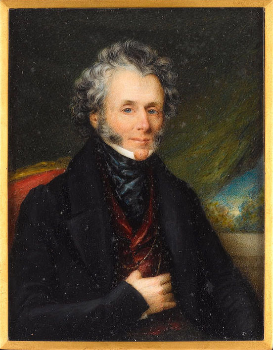
F.H. Bischoff. Portrait of A.B. [sic] Gibson Esq, Consul of the United States of North America at St. Petersburgh. 4 1/10 x 5 1/8 in. (10.7 x 13.0 cm). Private collection; exhibited at the Royal Academy, London 1841, no. 911; sold at auction 8 April 2020. [full resolution image]
Image 280
Colin McCrae Ingersoll, secretary ad interim to the American Legation in St. Petersburg from May 1847 to May 1848
John Randolph Clay, who served as secretary of the American Legation in St. Petersburg from July 1845 until April 1847
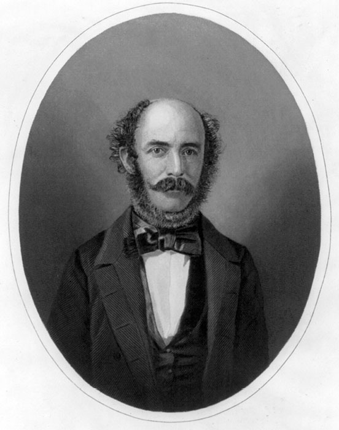
John Randolph Clay, American diplomat to Peru (John Livingston, Portraits of Eminent Americans Now Living, with Biographical and Historical Memoirs of Their Lives and Actions, 2 vols. [New York: Cornish, Lampert; London: Sampson, Low & Son, 1853], vol. 1, opposite p. 133) [full resolution image]
Image 282
John Randolph of Roanoke was described by Anna Whistler as generally being called “our queer Randolph.”
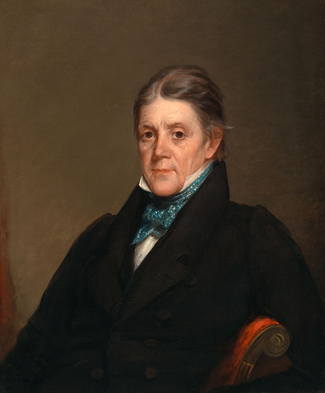
Chester Harding (1792–1866). John Randolph of Roanoke. 1829. Oil on canvas. 29½ x 24½ in. (74.9 x 62.2 cm). National Portrait Gallery, Smithsonian Institute, Washington, DC (NPG.2019.9).
Image 283
Baron Alexander Andreevich Bodisco, Russian envoy extraordinary and minister plenipotentiary to the United States from 1833 to 1854, whom Anna Whistler met in St. Petersburg in January 1844 at Colonel Todd’s birthday party
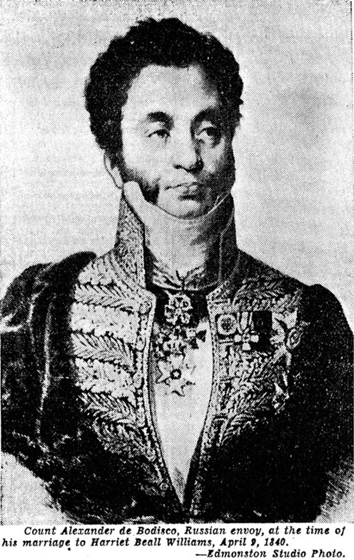
John Clagett Proctor, “Count Bodisco, Russian Envoy and Young Bride Made Social History Here,” Sunday Star (Washington, DC), September 8, 1940, p. 2) [full resolution image]
Image 284
Harriet Beall (Williams) Bodisco, wife of Baron Alexander Andreevich Bodisco, whom Anna Whistler met at Colonel Todd’s birthday party in January 1844
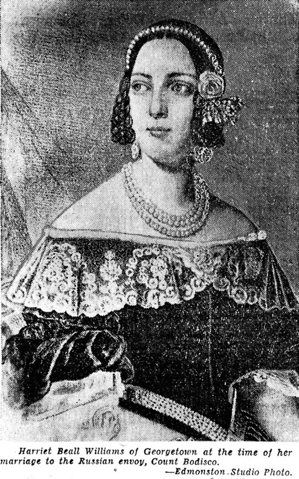
John Clagett Proctor, “Count Bodisco, Russian Envoy and Young Bride Made Social History Here,” Sunday Star (Washington, DC), September 8, 1940, p. 2) [full resolution image]
Image 285
Harriet Bodisco, called “the beautiful American” by the Russians
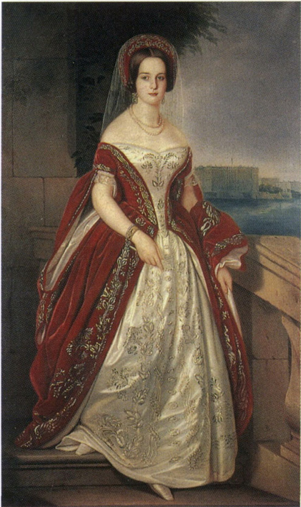
Johann Conrad Dorner (1809–1866). Harriet Bodisco. 1844. State Russian Museum, St. Petersburg. [full resolution image]
Image 286
When on leave in 1844, Eduard de Stoeckl, junior secretary of the Russian Legation in Washington, visited the Whistlers at their dacha on the Peterhof Road.
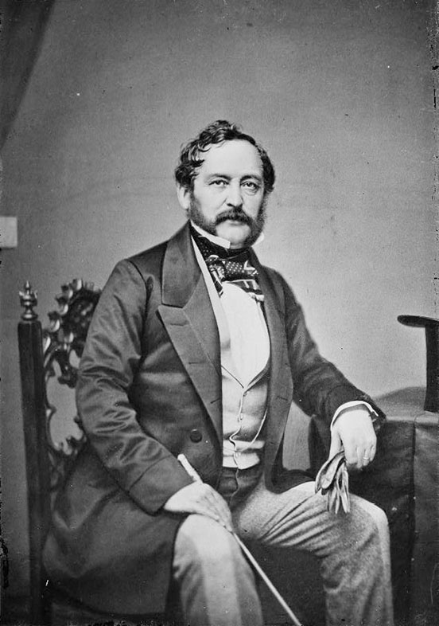
Baron de Stoeckl. c. 1860. Photograph. Brady-Handy Photograph Collection, Library of Congress Prints and Photographs Division (LC-BH82-5273B).
Image 287
Queen Victoria, the British monarch from 1838 to 1901
Sir Robert Ker Porter, diplomat, who, Colonel Todd told Anna Whistler, died unexpectedly while on a visit to St. Petersburg in 1842
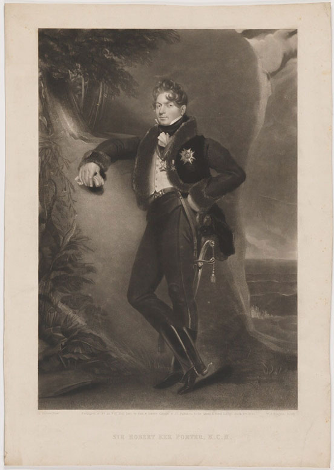
William Oakley Burgess (1818–1844). Sir Robert Ker Porter. 1843. Mezzotint from an oil painting (1808) by George Henry Harlow (1787–1819). Plate: 18 1/2 x 12 7/8 in. (47.1 x 32.7 cm); paper: 19 1/8 in. x 14 1/4 in. (48.5 x 36.1 cm). National Portrait Gallery, London (NPG D14453); bequeathed by (Frederick) Leverton Harris, 1927.
Image 289
Jane Porter, sister of Sir Robert Ker Porter and author of historical novels, who was with her brother in Russia when he died
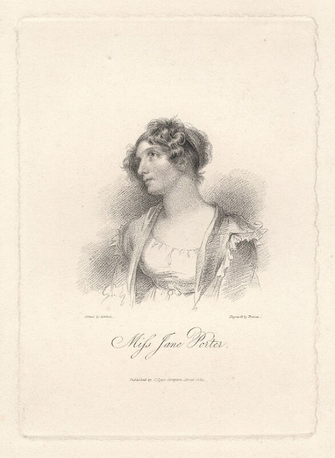
Samuel Freeman (c. 1773–1857). Jane Porter. Engraving from a pencil drawing by George Henry Harlow (1787–1819). National Portrait Gallery, London (NPG D9126).
Image 290
Anna Maria Porter, sister of Sir Robert Ker Porter, also mentioned by Anna Whistler when she was speaking of Sir Robert Ker Porter’s death
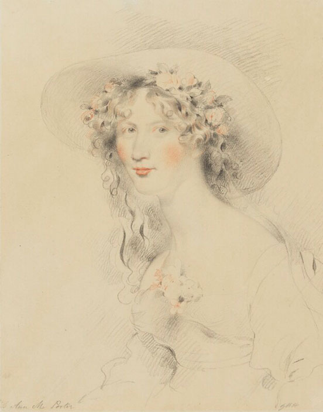
Thomas Woolnoth (1785–1857). Anna Maria Porter. Engraving from a pencil drawing by George Henry Harlow (1787–1819). National Portrait Gallery, London (NPG 1109).
Image 291
John Arthur Douglas Bloomfield, envoy extraordinary and minister plenipotentiary of Great Britain to the Russian Court as of April 1844, whom Anna Whistler used to see as a communicant of the English Church in St. Petersburg
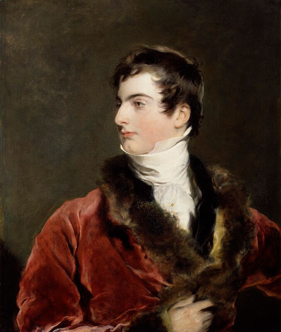
Thomas Lawrence (1769–1830). John Arthur Douglas Bloomfield, 2nd Baron Bloomfield. 1819. Oil on canvas. 9 3/4 x 25 1/8 in. (75.6 x 63.8 cm). National Portrait Gallery, London (NPG 1408); bequeathed by Georgiana Bloomfield, 1905).
Image 292
Anna Whistler used also to see Georgiana (Liddell) Bloomfield, wife of John Arthur Douglas Bloomfield and previously lady-in-waiting to Queen Victoria, as a communicant of the English Church in St. Petersburg
Queen Pomare of Tahiti, who asked Queen Victoria for help when exiled
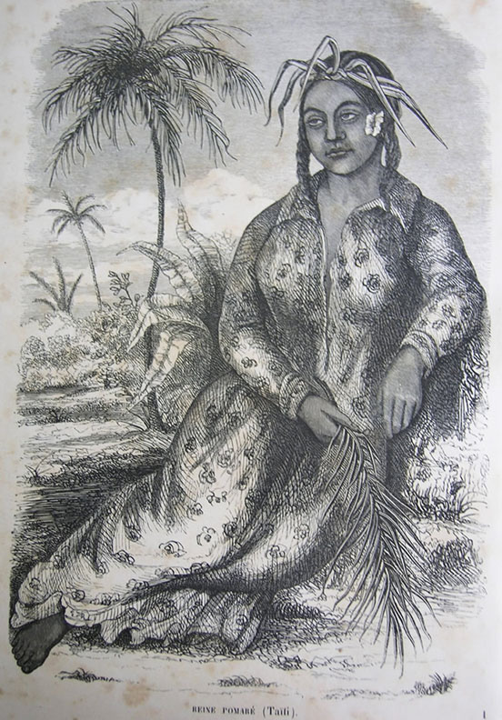
Reine Pomaré (Taïti) (Eugène Delessert, Voyages dans les deux océans, Atlantique et Pacifique, 1844 à 1847 [Paris: A. Franck, 1848], p. 129) [full resolution image]
Image 294
In the autumn of 1847, the Whistlers entertained Dr. Adair Crawford, who had been invited to Russia to consider being moral tutor to a son of Prince Pyotr Georgievich Ol’denburgskii, nephew of Nicholas I, and his wife, Princess Teresia Vil’gel’mina Ol’denburgskaia.
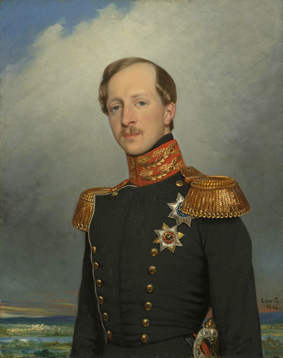
Joseph-Désiré Court (1797–1865). Portrait of Prince Peter of Oldenburg (1812-1881). 1842. Oil on canvas. 90 x 71.5 cm. State Hermitage Museum, St. Petersburg (GE-5178).
Image 295
Princess Teresia Vil’gel’mina Ol’denburgskaia, wife of Prince Pyotr Georgievich Ol’denburgskii
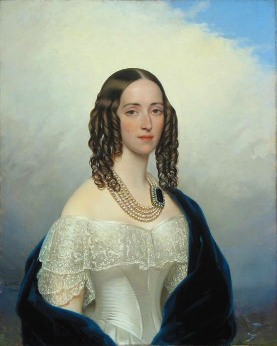
Joseph-Désiré Court (1797–1865).Portrait of the Princess of Oldenburg. 1847. Oil on canvas. 89 x 71 cm. State Hermitage Museum, St. Petersburg (GE-5170).
Image 296
The children of Prince Pyotr Georgievich Ol’denburgskii and Princess Teresia Vil’gel’mina Ol’denburgskaia in 1853. One of the two oldest boys in this portrait is the son to whom Dr. Adair Crawford was asked to consider being moral tutor.
Admiral Aleksei Samuilovich Greig of the Russian Navy, who died in January 1845
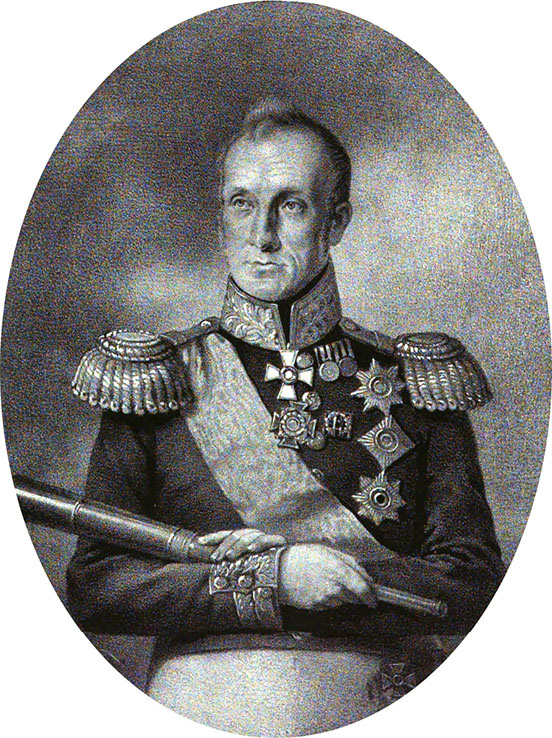
Admiral Aleksei Samuilovich Greig. Lithograph. (Aslanbegov, Admiral Aleksei Samuilovich Greig, frontispiece) [full resolution image]
Image 298
Sir James Wylie, MD, 1st Baronet, was the chief inspector of military hospitals. The back of his house on Galernaia Street faced the front of the Bobrinskii house.
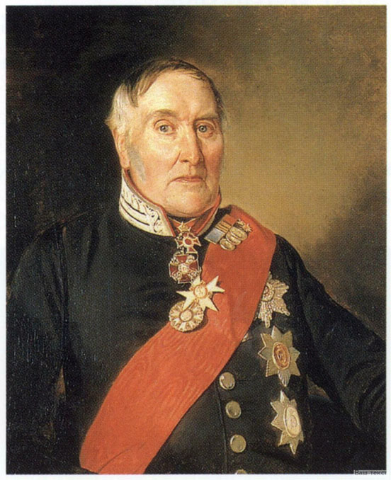
Mihály Zichy (1827–1906). Sir James Wylie, MD. 1st Baronet. Oil on canvas. State Russian Museum, St. Petersburg. [full resolution image]
Image 299
Count Aleksandr Sergeevich Stroganov was a passenger on the lighter carrying the Whistlers to St. Petersburg in September 1843.
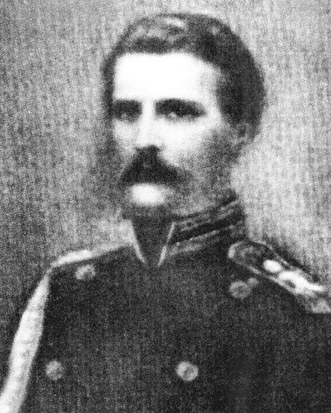
O. Tishina. Portrait of Count Alexandr Sergeevich Stroganov (1818–1864). Second half of the 19th century. Miniature. State Russian Museum, St. Petersburg. [full resolution image]
Image 300
Colonel Todd told Anna Whistler about attending the funeral of Sofia Vladimirovna (Golitsyna) Stroganova, the grandmother of the young Count Aleksandr Sergeevich Stroganov, whom Anna Whistler and her family met on the lighter to St. Petersburg in September 1843.
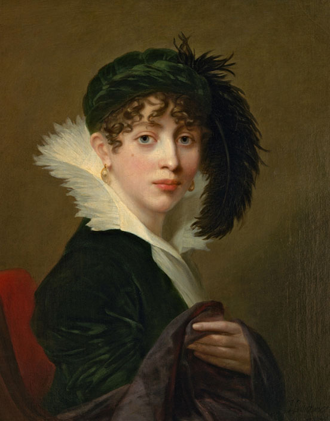
Jean-Laurent Mosnier (1743–1808). Portrait of Countess Sofia Stroganova. 1808. Oil on canvas. 24 7/8 x 21 7/8 in. Stroganov Palace, State Russian Museum, St. Petersburg. [full resolution image]
Image 301
Countess Tat’iana Dmitrievna (Vasil’chikova) Stroganova was the fiancée of Count Aleksandr Sergeevich Stroganov when Anna Whistler saw her at the fête given by Count Grigorii Grigorievich Kushelev for his peasants.
Count Grigorii Grigorievich Kushelev (1802–1855), at whose estate on the Peterhof Road Anna Whistler and friends attended a fête he gave in 1844 for his peasants
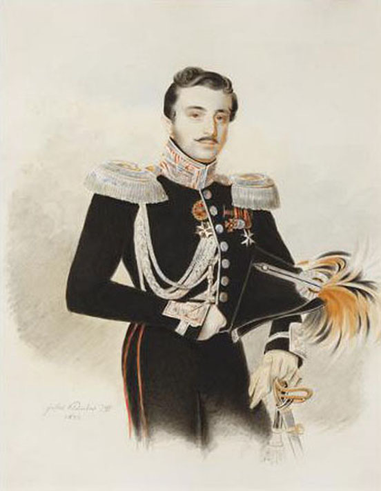
Julius Klünder (1802–1875). Count Grigory Grigoryevich Kushelev (1802–1855) the Younger. 1833. [full resolution image]
Image 303
Countess Ekaterina Dmitrievna (Vasil’chikova) Kusheleva, the wife of Count G.G. Kushelev, was present at the fête for his peasants that Anna Whistler attended.
Dmitrii Vasilievich Vasil’chikov, brother of Prince Illarion Vasilievich Vasil’chikov and father of Ekaterina (Vasil’chikova) Kusheleva and Tat’iana Dmitrievna Vasil’chikova
From 1832 to 1853, the retired Buturlin squandered a huge fortune, thereby requiring him to return to active duty in the civil service. Anna Whistler was told about how he had gambled away one of his estates.
While visiting the Olenin daughter’s governess, Miss McLean, in Tsarskoe Selo, Anna Whistler met the pupil’s mother, the widowed Varvara Aleekseevna Olenina.
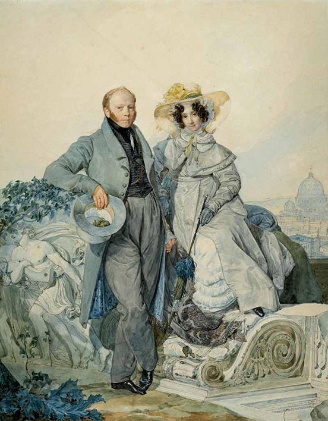
Karl Briullov (1799–1852). Portrait of Grigorii Nikanorovich Olenin and Varvara Alekseevna Olenina in Rome. 1828. Watercolor on paper. 42.5 x 33.5 cm. State Tret’iakov Gallery, Moscow. [full resolution image]
Image 307
Aleksei Nikolaevich Olenin, who died in 1843, was the father of Varvara Alekseevna Olenina, whom Anna Whistler met when she went to visit Miss McLean, the governess
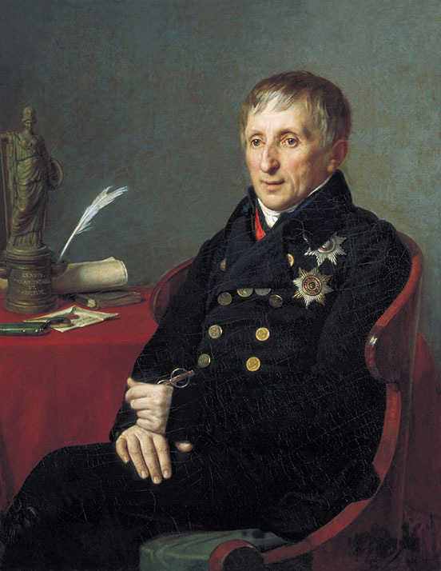
Alexandr Grigorievich Varnek (d. 1843). Portrait of the President of the Academy of Arts Alexei Nikolaevich Olenin. 1824. Oil on canvas. Scientific Research Museum of the Russian Academy of Arts, St. Petersburg. [full resolution image]
Image 308
Count Aleksandr Khristoforovich Benkendorf, head of the Third Department of His Imperial Majesty’s Own Chancery and chief of the Gendarmerie, to whose office in his home Anna Whistler accompanied her half-sister Alicia McNeill to obtain a ticket of residence
Prince Illarion Vasilievich Vasil’chikov, close friend of Nicholas I, is shown in the uniform of the Life-Guard Dragoon Regiment, whose chief he was from 1814 to 1847. Anna Whistler watched his funeral cortege in 1847.
Leontii Vasilievich Dubel’t, to whom Colonel Charles Stewart Todd applied to get Martha Reed Ropes released from Cronstadt to enter St. Petersburg
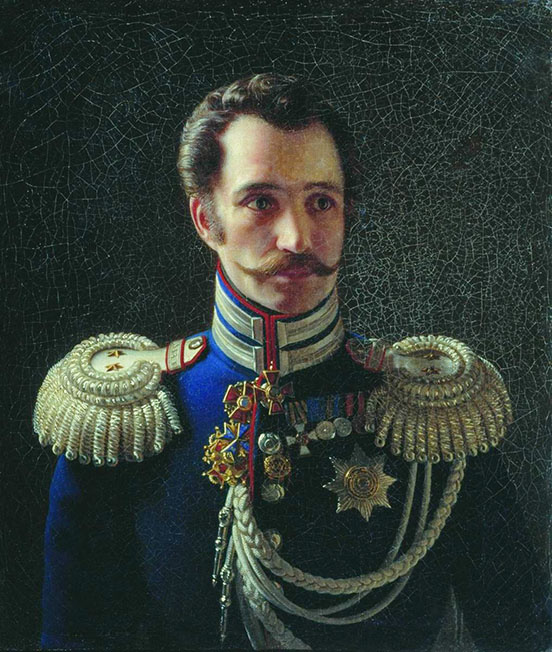
Aleksei Vasilievich Tyranov (1808–1859). Portrait of Leontii Dubelt. 1842–1844. Oil on canvas. 46 x 39.5 cm. State Literary Museum, Moscow. [full resolution image]
Image 312
Count Aleksei Fyodorovich Orlov, with whom Sir William Allan, when in St. Petersburg in the summer of 1844, corresponded concerning his painting Peter the Great Teaching the Peasants to Make Ships
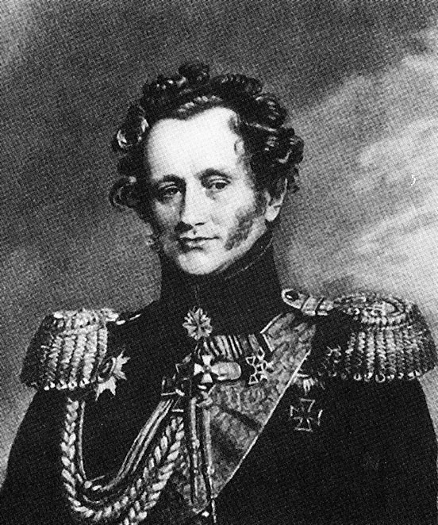
M.D. Filin, Imperator Nikolai Pervyi [Emperor Nicholas I], in Russkii mir v litsakh [The Russian World Through Its Personages] (Moscow: Russkii Mir, 2002). [full resolution image]
Image 313
Count Aleksandr Vladimirovich Adlerberg, childhood companion of the future Alexander II and aide-de-camp of Nicholas I, for whose expected child Anna Whistler said the seamstress Franciska was making baby clothes
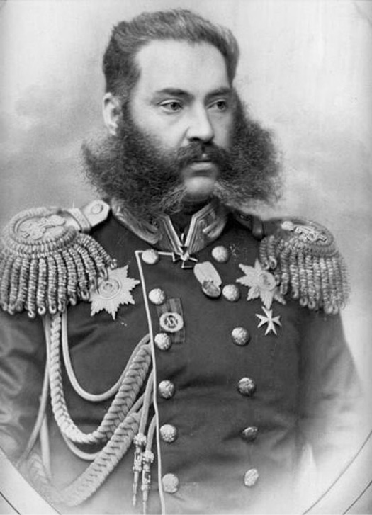
Andrey (Heinrich) Ivanovich Denyer. Portrait of Count Alexander Adlerberg. 1858–1861. Photograph. Multimedia Art Museum, Moscow. Retrieved 24 July 2022 from the History of Russia in Photographs project, developed with the support of Yandex and the Ministry of Culture of the Russian Federation, accessed 20 February 2023.
Image 314
Adjutant General and General of Infantry Aleksandr Aleksandrovich Kavelin, the military governor general of St. Petersburg in 1844, to whom Nicholas I sent a moving rescript after the body of Grand Duchess Aleksandra Nikolaevna was transferred from Tsarskoe Selo to the Imperial mausoleum at the Peter and Paul Fortress
Adjutant General and General of Infantry Matvei Evgrafovich Khrapovitskii, the military governor general of St. Petersburg from April 1846 to March–April 1847, about whose attention to exorbitant pricing of food products Charlotte Leon told Anna Whistler
Adjutant General and General of Infantry Dmitrii Ivanovich Shul’gin, military governor general of St. Petersburg from April–May 1847 to December 1854 / January 1855
Imam Shamil’, leader of Caucasian resistance (1834–1859) to Russia’s war of annexation, at prayer
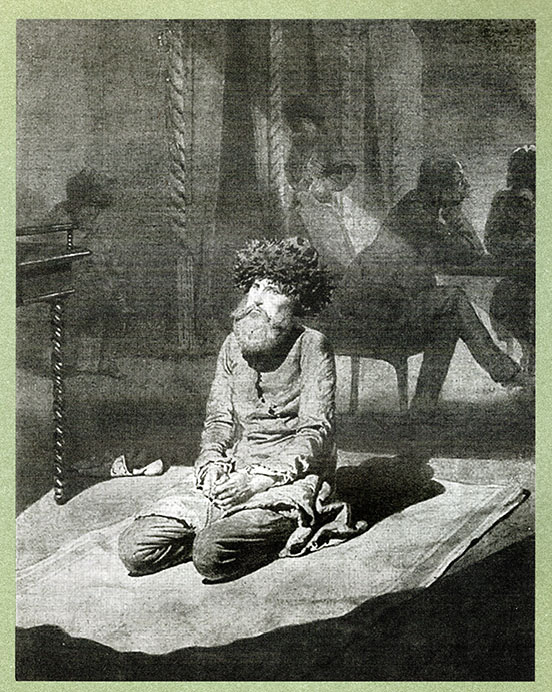
Mihály Zichy (1829–1906). Imam Shamil’ at Prayer. Mid-19th century. Lithograph. (R. Ia. Shterengarts, Istoriia Rossii XIX veka v zerkale graficheskogo iskusstva [The History of 19th-Century Russia in the Mirror of Graphic Art] [Moscow: Progress-Traditsiia, [2002]], p. 111) [full resolution image]
Image 318
Sylvanus Thayer, superintendant of the United States Military Academy when Major Whistler was a cadet there, visited the Whistlers on the Peterhof Road in July 1844.
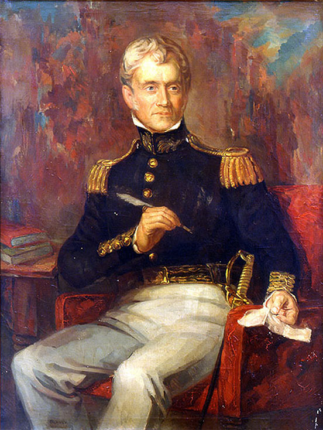
Robert W. Weir (1803–1889). Brevet Brigadier General Sylvanus Thayer. 1845. West Point Museum Collection, United States Military Academy, West Point, NY. [full resolution image]
Image 319
Charles Collins Parker, a medical student and traveling companion to Colonel Sylvanus Thayer, accompanied him on a visit to the Whistlers on the Peterhof Road in July 1844.
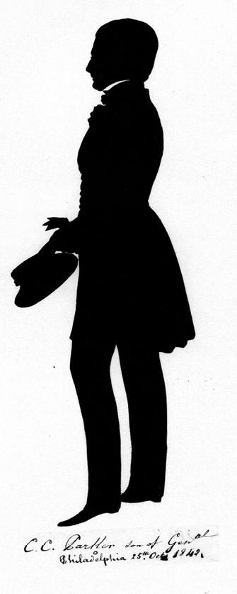
C.C. Parker, Son of Genal Philadelphia 25th Octr 1842. 1842. Silhouette. Metropolitan Museum of Art, New York (50.602.1158); bequest of Glenn Tilley Morse, 1950. [full resolution image]
Image 320
The Scottish artist Sir William Allan visited the Whistlers on the Peterhof Road in the summer of 1844 and praised James’s artwork.
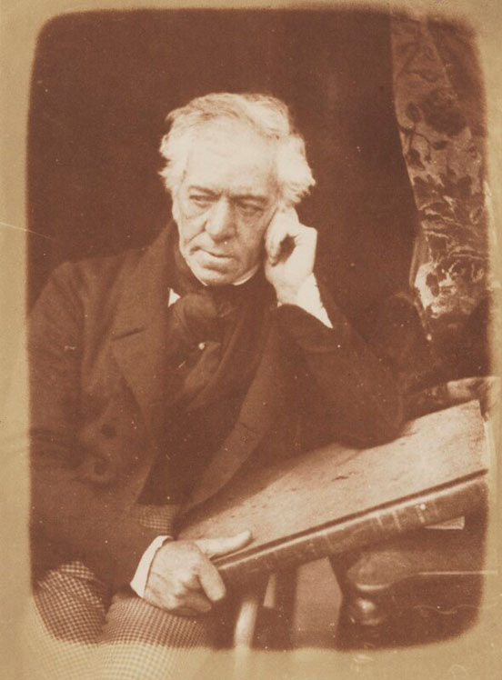
David Octavius Hill (1802–1870) and Robert Adamson (1821–1848). Sir William Allan. 1844. Calotype. 8 x 5 in. (20.3 x 14.3 cm). National Portrait Gallery, London (NPG P6(9).
Image 321
David Ochterlony Dyce Sombre was a fabulously wealthy Anglo-Indian member of the British Parliament, whose jealousy towards his wife caused her family to have him committed as insane. His escape from restraint caused him to wander all over Europe, which was a probable reason for his being in St. Petersburg, where John Stevenson Maxwell met him at the misses Benson’s boarding house in 1844.
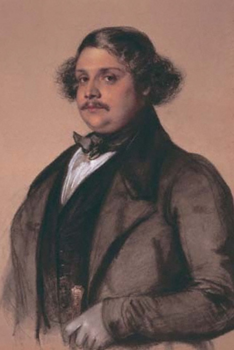
Charles Brocky (1807–1855). David Ochterlony Dyce Sombre (1808–1851). Oil on canvas. The Potteries Museum & Art Gallery, Stoke-on-Trent, UK. (Oxford Dictionary of National Biography, s.v. “Sombre, David Ochterlony Dyce,” accessed 28 September 2021) [full resolution image]
Image 322
Prince Oscar of Sweden attended the wedding of Grand Duchess Olga Nikolaevna and the Crown Prince of Württemberg in 1846.
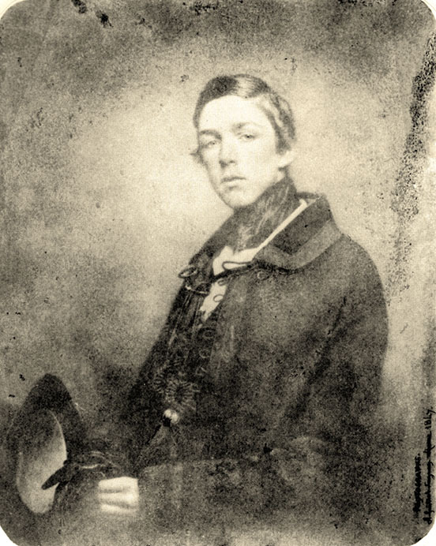
Huillot de Saignez (attributed). Prince Oscar II of Sweden. 1847. Photograph. Bernadotte Library Archive, Stockholm, Sweden. [full resolution image]
Image 323
Vasilii Grigorievich Zhukov was the owner of a tobacco factory famous for its workers’ choir and a philanthropist. His choir sang at Ekateringof in summer.
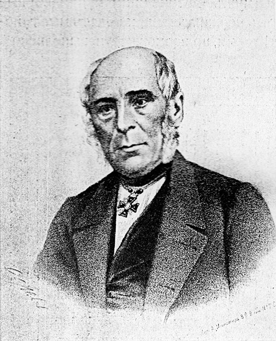
City Head V. Zhukov. (Bozherianov, Nevskii Prospekt, vol. 2, p. 426) [full resolution image]
Image 324
Count Stanisław Szczęsny Potocki, father of Olga Potocka, to whom Charlotte Leon had been governess
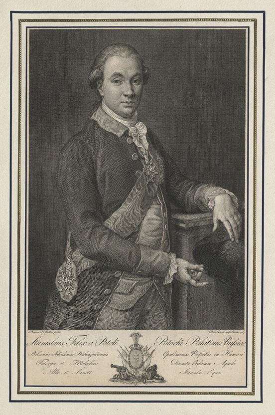
Domenico Cunego (c. 1724–1803). Stanisław Szczęsny Potocki. c. 1783. Copperplate etching. National Library of Poland, Warsaw. [full resolution image]
Image 325
Countess Zofia (Glavani)(Witt) Potocka, wife of Stanisław Szczęsny Potocki, to whose daughter, Olga, Charlotte Leon had been governess
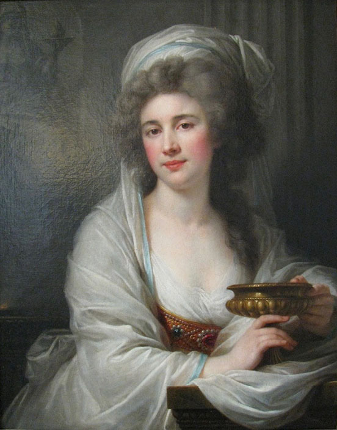
Johann Baptist Lampi (1751–1830). Zofia Wittowa Potocka (1760–1822) as a Vestal Virgin. c. 1785. Museo Castello del Buonconsiglio, Trento, Italy. [full resolution image]
Image 326
Countess Olga (Potocka) Naryshkina, to whom Charlotte Leon was governess, when the former was a child, was the daughter of Count Stanisław Szczęsny Potocki and Countess Zofia (Glavani)(Witt) Potocka.
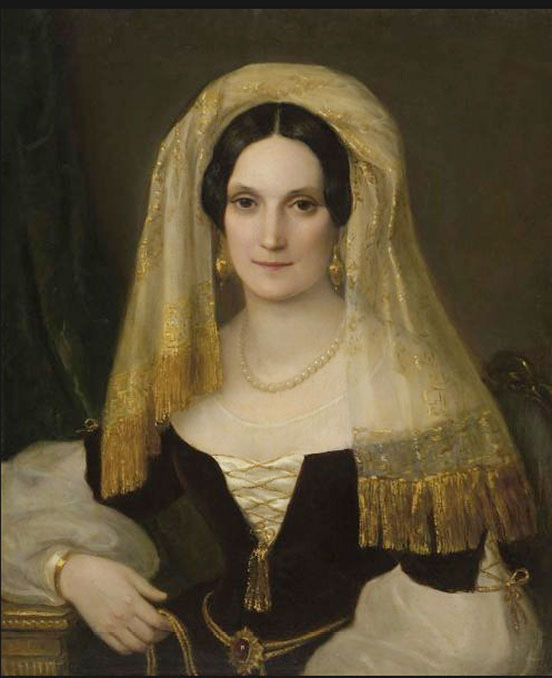
Portrait of Olga Naryshkina. 1830s–1840s. Oil on canvas. 70.5 x 58.5 cm. State Russian Museum, St. Petersburg (Zh-6223). [full resolution image]
Image 327
Countess Zofia (Potocka) Kiseleva, to whom Charlotte Leon had been governess, when the former was a child, was the daughter of Count Stanisław Szczęsny Potocki and Countess Zofia (Glavani)(Witt) Potocka.
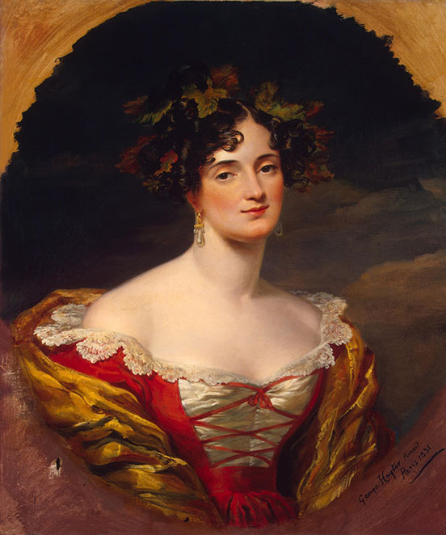
George Hayter (1792–1871). Portrait of Sophia S. Kiselyova (1801–1875). 1831. Oil on canvas. 78 x 67 cm; oval painted into a rectangle. Inscription: “George Hayter pinxit Paris 1831.” State Hermitage Museum, St. Petersburg (GE-4929).
Image 328
Alexander Hamilton Douglas told Charlotte Leon, when she was governess to Countess Zofia Potocka’s daughters, that she should feel free to contact him if she ever needed financial help.
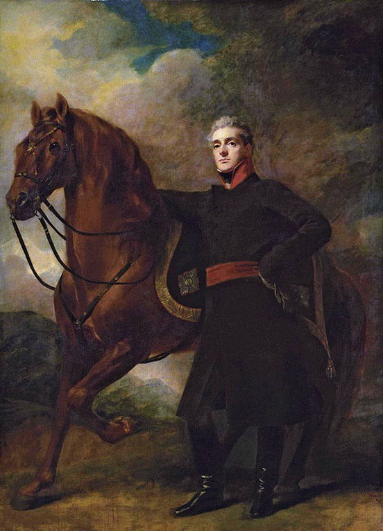
Henry Raeburn (1756–1823). Alexander Hamilton, 10th Duke of Hamilton and 7th Duke of Brandon (1767–1852). Between 1812 and 1823. Oil on canvas. 245.1 x 179.1 cm (96.4 x 70.5 in.). Sold at auction by Christie’s, London, 14 September 2011. [full resolution image]